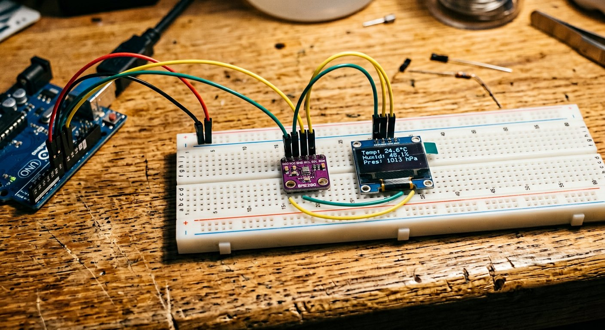

Qué cubre esta guía
- Por qué I2C es la base de este proyecto
- BME280 vs DHT22: qué sensor elegir
- Lista de materiales y costos de referencia
- Conexión de hardware: bus I2C compartido
- Sketch escáner I2C: verificar direcciones antes de programar
- Código Arduino: lectura básica y despliegue en OLED
- Código Arduino: pantallas rotativas y registro de extremos
- Cálculo de altitud barométrica
- Calibración y precisión de las lecturas
- Problemas comunes y solución de errores
- Upgrade: ESP32, WiFi y datos en la nube
- Mejoras posibles y siguientes pasos
- Preguntas frecuentes
Por qué I2C es la base de este proyecto
Casi todos los proyectos de estaciones meteorológicas caseras con Arduino terminan girando alrededor del mismo protocolo de comunicación: I2C (Inter-Integrated Circuit). La razón es simple y muy práctica: tanto los sensores ambientales digitales modernos (como el BME280) como las pantallas OLED económicas (como el módulo SSD1306) se comunican por I2C, lo que significa que ambos dispositivos pueden compartir exactamente los mismos dos pines de Arduino — SDA (datos) y SCL (reloj) — sin necesidad de cableado adicional por cada componente que agregues.
Esto es posible porque I2C es un protocolo de bus con direccionamiento: cada dispositivo conectado al bus tiene una dirección numérica única (normalmente expresada en hexadecimal, como 0x76 o 0x3C), y Arduino se comunica con cada uno llamando específicamente a su dirección, sin que los mensajes destinados a un dispositivo interfieran con los del otro. En la práctica, esto significa que puedes seguir agregando sensores I2C adicionales (un sensor de luz, un RTC para llevar la hora, otro display) usando los mismos dos cables, siempre que ningún dispositivo repita la dirección de otro ya conectado.
BME280 vs DHT22: qué sensor elegir
Antes de comprar componentes, vale la pena comparar las dos opciones más comunes para el sensor principal de esta estación meteorológica:
| Característica | BME280 | DHT22 (AM2302) |
|---|---|---|
| Mediciones | Temperatura, humedad y presión | Temperatura y humedad |
| Interfaz | I2C o SPI | Un solo cable (protocolo propietario) |
| Precisión de temperatura | ±1.0 °C | ±0.5 °C |
| Precisión de humedad | ±3% HR | ±2-5% HR |
| Tiempo entre lecturas | Menos de 1 segundo | Aproximadamente 2 segundos |
| Cálculo de altitud | Sí, mediante presión barométrica | No disponible |
| Precio aproximado | $3.500 – $6.000 CLP | $3.000 – $5.000 CLP |
| Ideal para | Estación meteorológica completa, presión y altitud | Proyecto simple de temperatura y humedad |
El BME280 es el que se usa como referencia en el resto de esta guía por ofrecer la funcionalidad más completa, incluyendo la medición de presión barométrica que habilita el cálculo de altitud y la detección de tendencias meteorológicas (una caída sostenida de presión suele anticipar mal tiempo). Si ya tienes un DHT22 de otro proyecto, el código de esta guía puede adaptarse fácilmente reemplazando las llamadas a la librería BME280 por las de la librería DHT, aunque perderás las funciones de presión y altitud.
Lista de materiales y costos de referencia
| Componente | Especificación sugerida | Precio aprox. (CLP) |
|---|---|---|
| Arduino Uno o Nano | Original o compatible con ATmega328P | $6.000 – $15.000 |
| Sensor BME280 | Breakout I2C, direcciones 0x76/0x77 | $3.500 – $6.000 |
| Pantalla OLED SSD1306 | 128x64 px, I2C, 0.96 pulgadas | $3.000 – $6.000 |
| Resistencias pull-up | 4.7 kΩ, 1/4 W (par, opcional) | $100 – $300 |
| Protoboard y jumpers | Set básico macho-macho y macho-hembra | $2.000 – $5.000 |
| Módulo RTC (opcional) | DS3231, para registro con hora real | $2.500 – $4.500 |
| Carcasa o caja protectora | Impresa en 3D o caja plástica genérica | $0 – $5.000 |
| Total aproximado del proyecto | $14.500 – $32.000 |
Es uno de los proyectos con mejor relación de utilidad práctica por costo: además de ser educativo, terminas con un instrumento que puedes usar de verdad todos los días sobre tu escritorio.
Conexión de hardware: bus I2C compartido
La conexión de hardware es notablemente simple gracias al bus I2C compartido. En un Arduino Uno o Nano, los pines I2C por hardware son fijos: A4 (SDA) y A5 (SCL). Tanto el BME280 como la pantalla OLED se conectan a estos mismos dos pines, en paralelo.
Esquema conceptual de conexión (bus I2C compartido):
Arduino 5V (o 3.3V, según módulo) ---+---> BME280 VCC
+---> OLED VCC
Arduino GND ---------------------+---> BME280 GND
+---> OLED GND
Arduino A4 (SDA) -----------------+---> BME280 SDA
+---> OLED SDA
Arduino A5 (SCL) -----------------+---> BME280 SCL
+---> OLED SCLLa mayoría de los módulos OLED SSD1306 económicos vienen preparados para operar tanto a 3.3V como a 5V sin problema, pero siempre vale la pena confirmarlo revisando la documentación del vendedor específico antes de conectar por primera vez.
Sketch escáner I2C: verificar direcciones antes de programar
Antes de escribir la lógica completa de la estación meteorológica, es una práctica muy recomendable ejecutar un pequeño sketch "escáner" que recorra todas las direcciones I2C posibles y reporte cuáles dispositivos responden. Esto confirma que el cableado es correcto y evita perder tiempo depurando código cuando el problema real es una dirección incorrecta o un dispositivo mal conectado.
#include <Wire.h>
void setup() {
Wire.begin();
Serial.begin(9600);
while (!Serial);
Serial.println("Escaneando bus I2C...");
}
void loop() {
int dispositivosEncontrados = 0;
for (byte direccion = 1; direccion < 127; direccion++) {
Wire.beginTransmission(direccion);
byte error = Wire.endTransmission();
if (error == 0) {
Serial.print("Dispositivo I2C encontrado en 0x");
if (direccion < 16) Serial.print("0");
Serial.println(direccion, HEX);
dispositivosEncontrados++;
}
}
if (dispositivosEncontrados == 0) {
Serial.println("No se encontraron dispositivos I2C. Revisa el cableado.");
}
delay(5000);
}Al ejecutarlo con el BME280 y la pantalla OLED conectados correctamente, deberías ver algo similar a Dispositivo I2C encontrado en 0x76 (o 0x77) para el sensor, y Dispositivo I2C encontrado en 0x3C para la pantalla. Si no aparece ninguno, el problema está en el cableado físico o la alimentación, no en el código posterior.
Código Arduino: lectura básica y despliegue en OLED
Este primer ejemplo lee temperatura, humedad y presión del BME280, y los muestra en la pantalla OLED usando las librerías Adafruit_BME280, Adafruit_SSD1306 y Adafruit_GFX, todas instalables desde el Gestor de Librerías del IDE de Arduino.
#include <Wire.h>
#include <Adafruit_Sensor.h>
#include <Adafruit_BME280.h>
#include <Adafruit_GFX.h>
#include <Adafruit_SSD1306.h>
#define ANCHO_PANTALLA 128
#define ALTO_PANTALLA 64
#define DIRECCION_OLED 0x3C
Adafruit_SSD1306 display(ANCHO_PANTALLA, ALTO_PANTALLA, &Wire, -1);
Adafruit_BME280 bme;
void setup() {
Serial.begin(9600);
if (!bme.begin(0x76)) {
Serial.println("No se encontro el sensor BME280. Revisa el cableado.");
while (1);
}
if (!display.begin(SSD1306_SWITCHCAPVCC, DIRECCION_OLED)) {
Serial.println("No se encontro la pantalla OLED.");
while (1);
}
display.clearDisplay();
display.setTextColor(SSD1306_WHITE);
}
void loop() {
float temperatura = bme.readTemperature();
float humedad = bme.readHumidity();
float presion = bme.readPressure() / 100.0F; // Pa a hPa
display.clearDisplay();
display.setTextSize(1);
display.setCursor(0, 0);
display.println("Estacion Meteo v1");
display.setTextSize(2);
display.setCursor(0, 16);
display.print(temperatura, 1);
display.println(" C");
display.setTextSize(1);
display.setCursor(0, 40);
display.print("Humedad: ");
display.print(humedad, 0);
display.println(" %");
display.setCursor(0, 52);
display.print("Presion: ");
display.print(presion, 0);
display.println(" hPa");
display.display();
delay(2000);
}Nótese que la dirección I2C del BME280 se pasa explícitamente en bme.begin(0x76) — si tu sketch escáner detectó 0x77 en vez de 0x76, ese es el valor que debes usar aquí. Es un error de configuración muy común cuando se copia código de internet sin verificar la dirección real del módulo propio.
Código Arduino: pantallas rotativas y registro de extremos
El siguiente ejemplo amplía el proyecto con dos capacidades adicionales que transforman la estación de un simple visor a un instrumento más completo: pantallas rotativas que alternan cada pocos segundos entre distintas vistas de información, y registro de valores mínimos y máximos guardados en la EEPROM interna de Arduino, de modo que persisten incluso si el dispositivo se apaga y se vuelve a encender.
#include <Wire.h>
#include <EEPROM.h>
#include <Adafruit_Sensor.h>
#include <Adafruit_BME280.h>
#include <Adafruit_GFX.h>
#include <Adafruit_SSD1306.h>
#define ANCHO_PANTALLA 128
#define ALTO_PANTALLA 64
Adafruit_SSD1306 display(ANCHO_PANTALLA, ALTO_PANTALLA, &Wire, -1);
Adafruit_BME280 bme;
const int DIR_EEPROM_TEMP_MIN = 0;
const int DIR_EEPROM_TEMP_MAX = 4;
float tempMin, tempMax;
unsigned long ultimoCambioPantalla = 0;
const long INTERVALO_PANTALLA = 4000; // 4 segundos por vista
int pantallaActual = 0;
const int TOTAL_PANTALLAS = 3;
void setup() {
Serial.begin(9600);
if (!bme.begin(0x76)) {
Serial.println("Error: BME280 no encontrado.");
while (1);
}
if (!display.begin(SSD1306_SWITCHCAPVCC, 0x3C)) {
Serial.println("Error: OLED no encontrada.");
while (1);
}
EEPROM.get(DIR_EEPROM_TEMP_MIN, tempMin);
EEPROM.get(DIR_EEPROM_TEMP_MAX, tempMax);
// Si la EEPROM esta "vacia" (primera vez), inicializar con la lectura actual
float tempActual = bme.readTemperature();
if (isnan(tempMin) || tempMin < -40 || tempMin > 85) tempMin = tempActual;
if (isnan(tempMax) || tempMax < -40 || tempMax > 85) tempMax = tempActual;
display.clearDisplay();
display.setTextColor(SSD1306_WHITE);
}
void actualizarExtremos(float tempActual) {
bool cambio = false;
if (tempActual < tempMin) { tempMin = tempActual; cambio = true; }
if (tempActual > tempMax) { tempMax = tempActual; cambio = true; }
if (cambio) {
EEPROM.put(DIR_EEPROM_TEMP_MIN, tempMin);
EEPROM.put(DIR_EEPROM_TEMP_MAX, tempMax);
}
}
void mostrarPantallaPrincipal(float t, float h, float p) {
display.setTextSize(1);
display.setCursor(0, 0);
display.println("Condiciones actuales");
display.setTextSize(2);
display.setCursor(0, 16);
display.print(t, 1); display.println(" C");
display.setTextSize(1);
display.setCursor(0, 40);
display.print("Humedad: "); display.print(h, 0); display.println(" %");
display.setCursor(0, 52);
display.print("Presion: "); display.print(p, 0); display.println(" hPa");
}
void mostrarPantallaExtremos() {
display.setTextSize(1);
display.setCursor(0, 0);
display.println("Minimos y maximos");
display.setTextSize(2);
display.setCursor(0, 20);
display.print("Min "); display.print(tempMin, 1);
display.setCursor(0, 42);
display.print("Max "); display.print(tempMax, 1);
}
void mostrarPantallaAltitud(float p) {
float altitud = bme.readAltitude(1013.25); // presion de referencia nivel del mar
display.setTextSize(1);
display.setCursor(0, 0);
display.println("Altitud estimada");
display.setTextSize(2);
display.setCursor(0, 24);
display.print(altitud, 0);
display.println(" m");
}
void loop() {
float t = bme.readTemperature();
float h = bme.readHumidity();
float p = bme.readPressure() / 100.0F;
actualizarExtremos(t);
if (millis() - ultimoCambioPantalla > INTERVALO_PANTALLA) {
pantallaActual = (pantallaActual + 1) % TOTAL_PANTALLAS;
ultimoCambioPantalla = millis();
}
display.clearDisplay();
switch (pantallaActual) {
case 0: mostrarPantallaPrincipal(t, h, p); break;
case 1: mostrarPantallaExtremos(); break;
case 2: mostrarPantallaAltitud(p); break;
}
display.display();
delay(200);
}El uso de millis() en vez de delay() para controlar la rotación de pantallas es intencional: permite que las lecturas de sensores y la actualización de extremos sigan ocurriendo con frecuencia normal, sin bloquear el programa durante los 4 segundos de cada vista — un patrón de programación no bloqueante fundamental en cualquier proyecto de Arduino que crece en complejidad.
Cálculo de altitud barométrica
Una de las capacidades más interesantes del BME280 frente a sensores más simples es el cálculo de altitud a partir de la presión atmosférica. El principio físico es que la presión del aire disminuye de forma predecible con la altura, siguiendo la fórmula barométrica internacional. La librería Adafruit implementa esto en la función readAltitude(presionReferenciaHPa), que necesita como parámetro la presión atmosférica al nivel del mar en el momento y lugar de la medición.
El valor estándar internacional de 1013.25 hPa es una aproximación razonable para uso general, pero introduce un margen de error real: la presión atmosférica al nivel del mar varía día a día según las condiciones meteorológicas, típicamente entre 990 y 1030 hPa. Para mayor precisión en un lugar fijo, puedes calibrar tu propia constante de referencia comparando la altitud calculada contra la altitud real conocida de tu ubicación (consultable en servicios de mapas), y ajustando la presión de referencia hasta que el cálculo coincida.
Calibración y precisión de las lecturas
- Ubicación del sensor: evita colocar el BME280 cerca de fuentes de calor como el propio Arduino, un cargador USB, o luz solar directa — el calor generado por componentes cercanos puede inflar la lectura de temperatura en 1-3°C fácilmente.
- Tiempo de estabilización: tras encender el circuito, espera 1-2 minutos antes de confiar en las primeras lecturas, especialmente de humedad, mientras el sensor se equilibra con el ambiente.
- Comparación cruzada: si tienes acceso a un termómetro/higrómetro comercial de referencia, compara las lecturas durante algunos días y aplica un offset de corrección por software si detectas una desviación sistemática constante.
- Ventilación de la carcasa: si montas el sensor dentro de una caja o carcasa impresa en 3D, asegúrate de dejar aberturas suficientes para que el aire circule libremente — una carcasa completamente sellada distorsiona tanto la temperatura como la humedad medida.
- Presión de referencia local: para el cálculo de altitud, considera actualizar periódicamente la presión de referencia al nivel del mar consultando un servicio meteorológico local, en vez de usar siempre el valor estándar fijo de 1013.25 hPa.
Problemas comunes y solución de errores
| Síntoma | Causa probable | Solución |
|---|---|---|
| "No se encontro el sensor BME280" | Dirección I2C incorrecta en el código, o cableado defectuoso | Ejecutar sketch escáner I2C, probar con 0x76 y 0x77 |
| Pantalla OLED completamente en blanco | Dirección I2C incorrecta (0x3C vs 0x3D), o falla de alimentación | Verificar dirección con escáner I2C, revisar continuidad de VCC/GND |
| Lecturas de temperatura anormalmente altas | Sensor demasiado cerca del Arduino u otra fuente de calor | Separar el sensor físicamente, usar un cable más largo para el bus I2C |
| Valores mínimo/máximo se resetean al reiniciar | EEPROM no inicializada correctamente o dirección de memoria mal calculada | Verificar que EEPROM.put/get usen direcciones distintas y no se sobrepongan |
| El bus I2C deja de responder con múltiples dispositivos | Falta de resistencias pull-up en un bus largo o con muchos dispositivos | Agregar resistencias pull-up de 4.7kΩ entre SDA/SCL y VCC |
| Altitud calculada muy alejada de la altitud real conocida | Presión de referencia al nivel del mar desactualizada | Ajustar el parámetro de readAltitude() con la presión real del día |
Upgrade: ESP32, WiFi y datos en la nube
El Arduino Uno o Nano es perfectamente suficiente para una estación meteorológica local que muestra datos en tiempo real sobre su propia pantalla. Sus limitaciones aparecen cuando quieres que esos datos salgan del dispositivo: registrar un histórico prolongado, consultarlo desde el celular, o compartirlo en un panel público. Para esos casos, migrar a ESP32 es el paso natural, ya que mantiene compatibilidad casi total con el mismo código de sensores y pantalla, pero agrega WiFi integrado.
Con ESP32, el mismo BME280 y la misma pantalla OLED conectados por I2C pueden coexistir con un pequeño servidor web embebido que muestre las lecturas actuales en una página accesible desde cualquier dispositivo en la misma red, o con código que envíe periódicamente las lecturas a servicios de dashboards en la nube como ThingSpeak, que ofrece gráficos históricos de temperatura, humedad y presión sin necesidad de programar tu propio backend.
| Criterio | Arduino Uno/Nano | ESP32 |
|---|---|---|
| Costo aproximado | $6.000 – $15.000 | $8.000 – $18.000 |
| Conectividad WiFi | No nativa, requiere módulo adicional | Integrada |
| Registro histórico en la nube | No, sin hardware adicional | Sí, directo con librerías HTTP |
| Servidor web local | No práctico | Sí, con la librería WebServer |
| Consumo de energía | Menor | Mayor, especialmente con WiFi activo |
| Ideal para | Estación de escritorio local y educativa | Estación con monitoreo remoto o histórico prolongado |
Mejoras posibles y siguientes pasos
- Módulo RTC (DS3231): agrega una referencia de hora real y fecha, indispensable si vas a registrar históricos con marca temporal precisa.
- Tarjeta microSD: registra lecturas cada cierto intervalo en un archivo CSV, permitiendo análisis posterior en una planilla de cálculo sin depender de conexión a internet.
- Sensor de lluvia o anemómetro: amplía la estación más allá de temperatura/humedad/presión hacia una estación meteorológica de exterior más completa, con las consideraciones de impermeabilización que eso implica.
- Gráficos en la propia pantalla OLED: usando las funciones de dibujo de la librería Adafruit_GFX, es posible mostrar un gráfico simple de tendencia de temperatura de las últimas horas directamente en la pantalla, sin depender de la nube.
- Alertas configurables: hacer sonar un buzzer o encender un LED cuando la temperatura o humedad salgan de un rango definido, útil para invernaderos caseros o cuidado de mascotas.
Conclusión
Una estación meteorológica con Arduino, BME280 y pantalla OLED es uno de esos proyectos que combina aprendizaje técnico real —protocolo I2C, manejo de EEPROM, programación no bloqueante con millis(), física básica de presión atmosférica— con un resultado final genuinamente útil que puedes dejar funcionando sobre tu escritorio de forma indefinida. El bus I2C compartido simplifica enormemente el cableado frente a lo que uno esperaría de un proyecto con dos periféricos distintos, y el camino de upgrade hacia ESP32 está disponible sin necesidad de reescribir la lógica central del proyecto. Si es tu primer proyecto con sensores I2C, el sketch escáner de esta guía te ahorrará más de una sesión de depuración innecesaria.
Preguntas frecuentes
¿Qué es más preciso, el BME280 o el DHT22, para una estación meteorológica?
El BME280 es superior en casi todos los aspectos relevantes: mide temperatura, humedad y presión barométrica en un solo chip, con una precisión de humedad de ±3% frente al ±2-5% del DHT22, y una velocidad de respuesta mucho mayor gracias a su interfaz I2C/SPI digital de alta velocidad. El DHT22 solo mide temperatura y humedad, tiene un tiempo de respuesta más lento (aproximadamente una lectura cada 2 segundos) y con los años tiende a perder precisión más rápido que un sensor BME280 de buena calidad. Para un proyecto serio de estación meteorológica, el BME280 justifica su costo ligeramente mayor.
¿Por qué mi pantalla OLED no muestra nada aunque el código no marca errores?
Las causas más comunes son: dirección I2C incorrecta en el código (0x3C es la más común para módulos de 128x64, pero algunos usan 0x3D), conflicto de dirección I2C con otro dispositivo en el mismo bus (verificar con un sketch escáner I2C), conexiones SDA/SCL invertidas, o falta de las resistencias pull-up de 4.7kΩ en buses I2C largos o con múltiples dispositivos. Ejecutar un sketch escáner I2C antes de programar la lógica completa ahorra mucho tiempo de depuración.
¿Puedo conectar el BME280 y la pantalla OLED al mismo bus I2C sin problemas?
Sí, esa es precisamente una de las ventajas del protocolo I2C: permite conectar múltiples dispositivos a los mismos dos pines (SDA y SCL) siempre que cada uno tenga una dirección de bus distinta. El BME280 típicamente usa la dirección 0x76 o 0x77, mientras que la mayoría de las pantallas OLED SSD1306 usan 0x3C, por lo que ambos pueden compartir el mismo bus sin conflicto. Solo es necesario declarar cada dirección correctamente en el código de inicialización de cada librería.
¿Cómo calculo la altitud con un sensor de presión barométrica como el BME280?
El BME280 mide presión atmosférica absoluta, y la altitud se calcula comparando esa lectura contra la presión al nivel del mar mediante la fórmula barométrica estándar. La librería Adafruit_BME280 incluye una función readAltitude() que recibe como parámetro la presión de referencia al nivel del mar (normalmente 1013.25 hPa como estándar internacional, aunque varía según las condiciones meteorológicas reales del día). Es importante notar que esta altitud calculada es sensible a los cambios normales de presión atmosférica, por lo que puede variar varios metros de un día a otro incluso sin mover el sensor de lugar.
¿Vale la pena migrar el proyecto de Arduino Uno a ESP32?
Depende del objetivo del proyecto. Si solo necesitas mostrar lecturas locales en la pantalla OLED, un Arduino Uno o Nano es suficiente y más económico. La migración a ESP32 se justifica cuando quieres agregar conectividad WiFi para subir los datos a un servicio en la nube como ThingSpeak, crear un servidor web local para consultar el historial desde el celular, o registrar datos en una tarjeta SD durante periodos largos sin intervención manual — capacidades que el Arduino Uno no tiene de forma nativa.
Este artículo es contenido editorial independiente: no contiene ubicaciones patrocinadas ni enlaces de afiliado. Si en futuras actualizaciones se agregan enlaces a proveedores de componentes, serán identificados explícitamente. El código, las direcciones I2C y los valores de calibración son referenciales y pueden variar según el fabricante específico de tu módulo; verifica siempre el comportamiento con tu propio hardware. Si detectas un error técnico en esta guía, por favor avísanos.
Sigue aprendiendo
Si te interesó trabajar con comunicación de datos y protocolos en Arduino, nuestra guía Controla tu Arduino por Bluetooth con el Módulo HC-05 aplica un enfoque similar a otro protocolo de comunicación — en ese caso, control remoto inalámbrico en vez de lectura de sensores por bus I2C.
También puedes revisar el temario completo del blog para ver qué guías vienen en camino.
Fuentes primarias y lecturas recomendadas
Estas referencias sustentan los conceptos generales de la guía. Los valores exactos de precisión y comportamiento eléctrico deben verificarse con la hoja de datos de tu módulo específico, ya que existen variaciones entre fabricantes.
- Bosch Sensortec — Hoja de datos oficial del sensor BME280
- Adafruit Learning System — Guía de uso de pantallas OLED SSD1306
- Arduino Reference — Librería Wire (comunicación I2C)
Enlaces revisados: 21 de septiembre de 2026.